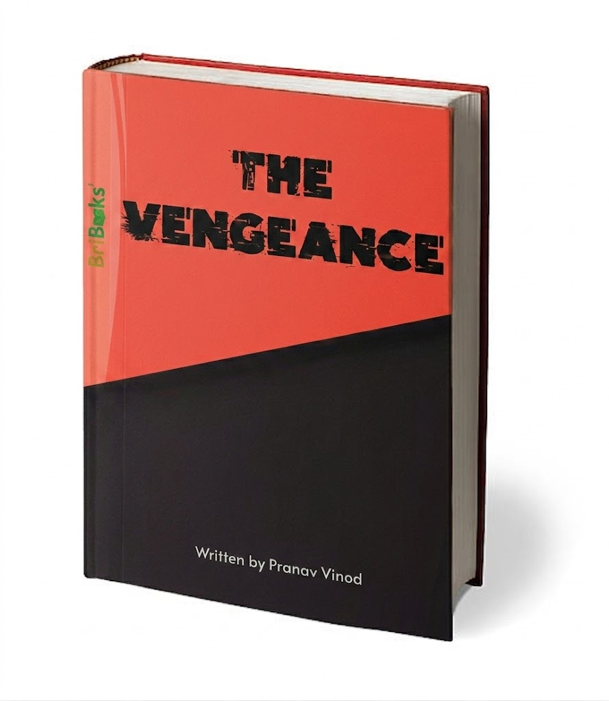
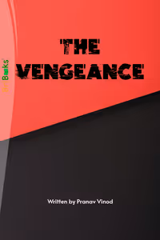
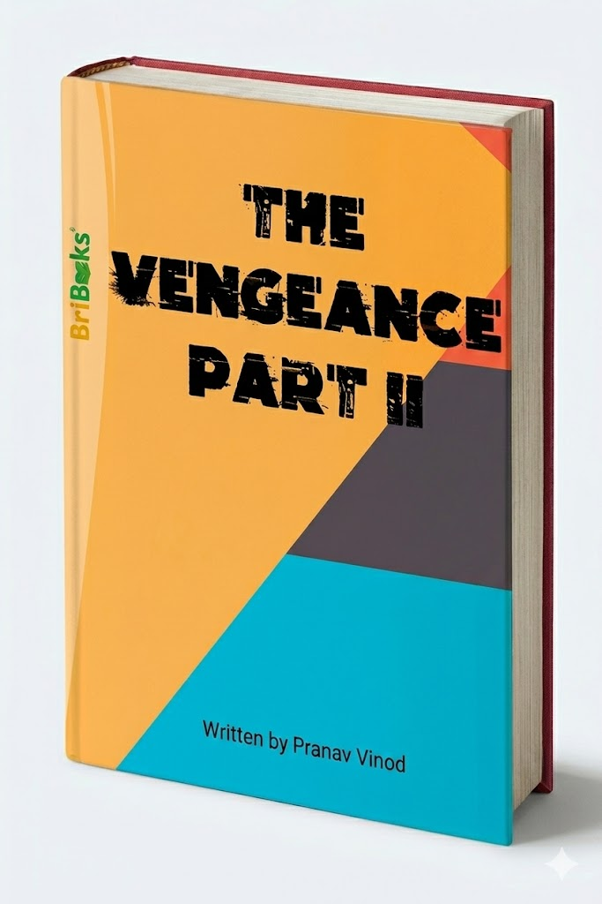
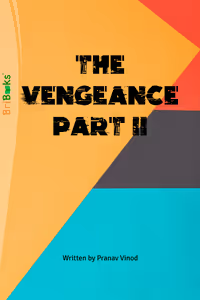

A series that started as a random idea and slowly turned into something way bigger.
The Vengeance is a story about mystery, tension, and consequences — and honestly, a lot of late nights figuring out what happens next.




Where everything begins. A story that slowly builds tension, introduces the characters, and sets up the chaos that follows.
Things get deeper, darker, and way more intense. More twists, more stakes, and a continuation that pushes everything further.
Most of this was written during random bursts of motivation — usually at the worst possible times (like late at night when I definitely should’ve been sleeping).
A lot of the story wasn’t even fully planned. It was more like:
“This would be cool…” → write it → “wait this actually works” → keep going → suddenly it’s a full book.
Also yes, I definitely surprised myself with some of the plot twists.
I didn’t start this thinking “I’m gonna publish books.” It was more like I just wanted to create something real — something people could actually read and feel something from.
And somehow… it worked.
So yeah, this page isn’t just about books. It’s proof that random ideas can actually turn into something big if you just keep going with them.